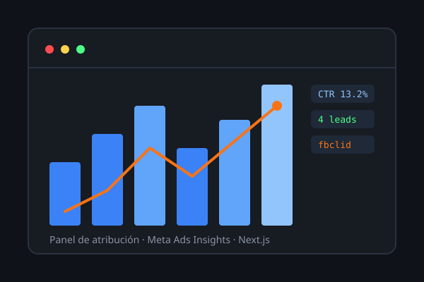

Gestión activa
Creación, duplicación y pausado de anuncios evaluando el impacto sobre la fase de aprendizaje del algoritmo y el presupuesto ya invertido.
Meta Ads · Atribución · Optimización
Creo, opero y optimizo tus campañas en Meta Ads día a día, y cuando el proyecto lo justifica construyo un sistema propio de atribución para saber exactamente qué anuncio genera cada lead.
Creación, duplicación y pausado de anuncios evaluando el impacto sobre la fase de aprendizaje del algoritmo y el presupuesto ya invertido.
Seguimiento del fbclid de cada clic para vincular cada lead individual con el anuncio exacto que lo generó, no solo con un número agregado.
Cuando el proyecto lo requiere, construyo un panel a medida con sincronización automática de Meta Ads Insights.
Nuevas variantes y pruebas evaluando cuándo duplicar (para no reiniciar el aprendizaje de un anuncio activo) y cuándo editar directamente.
Pausado y reasignación dentro de conjuntos de anuncios compartidos, aprovechando la consolidación automática de presupuesto de Meta.
Revisión carácter por carácter de las URLs de seguimiento antes de pausar cualquier anuncio con gasto real, para no perder datos de atribución.
Rutas de API propias que capturan el fbclid y redirigen al formulario correspondiente, con cron jobs que sincronizan Meta Ads Insights diariamente.
Impresiones, clics, CTR, gasto, leads y costo por lead, calculados sobre datos sincronizados —no estimaciones.
Revisión periódica del desempeño de cada anuncio para decidir qué escalar, pausar o ajustar según los resultados reales.

Gestión de campaña de captación con panel propio en Next.js: sincronización diaria de Meta Ads Insights y atribución de cada lead por fbclid.
No garantizo ventas, ROAS ni aprobación de anuncios: esas decisiones dependen de las políticas y el algoritmo de Meta.
El presupuesto de anuncios y los cargos de Meta corren por cuenta del cliente; no están incluidos en el costo del servicio.
Si tu cuenta publicitaria, píxel o portafolio empresarial no están configurados, ese trabajo se cotiza por separado.
Sí. Este servicio administra campañas sobre una cuenta ya activa. Si necesitas configurarla desde cero, ese alcance se cotiza como configuración de Meta Business Suite.
No siempre por defecto, pero puede añadirse cuando el proyecto necesita atribución individual por lead en lugar de solo los números agregados de Meta Ads Manager.
Evaluando en cada caso si conviene duplicar (para no reiniciar la fase de aprendizaje) o editar directamente, y verificando cualquier URL de seguimiento antes de pausar un anuncio con gasto real.
Sí. El caso de Club Esperanza, por ejemplo, se gestionó con un presupuesto diario reducido durante su fase de captación previa al evento.
Reviso tu cuenta actual y te propongo el alcance de gestión que realmente necesitas.